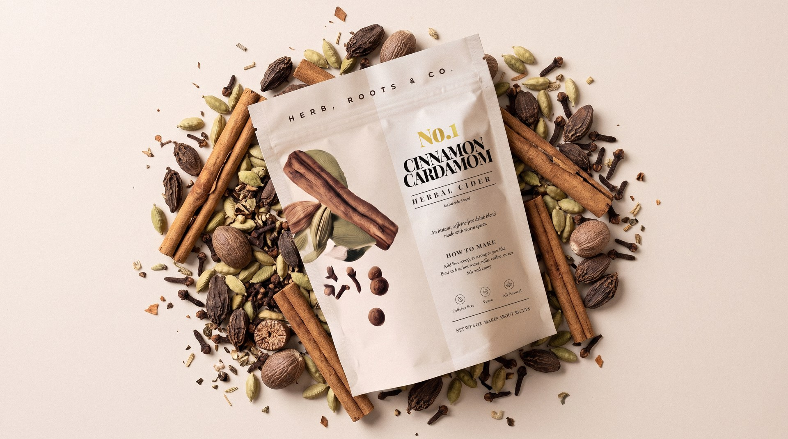
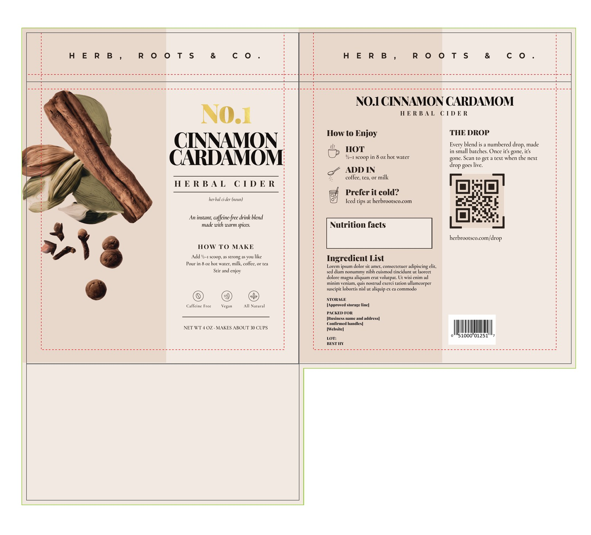
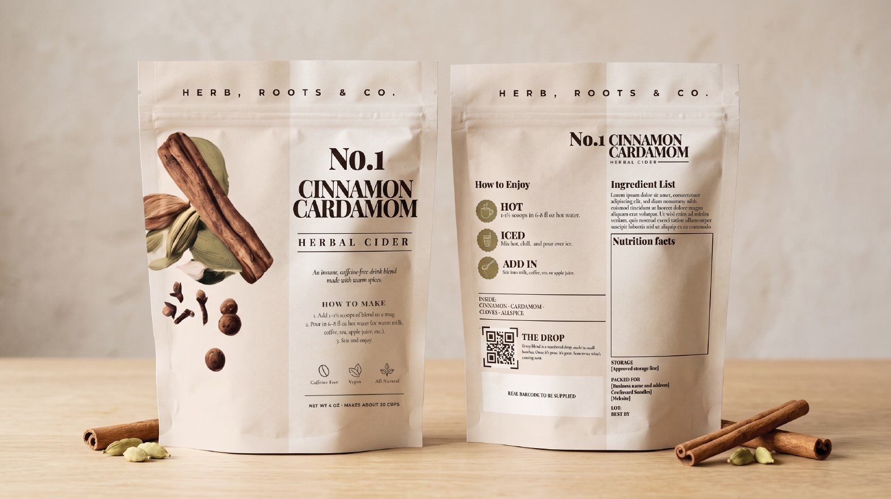
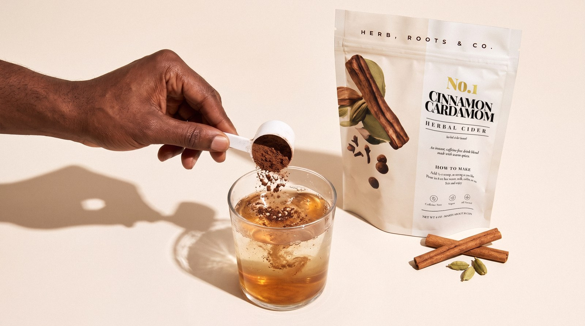
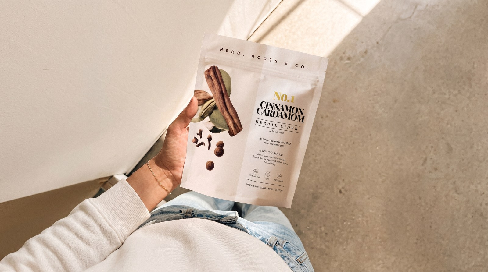
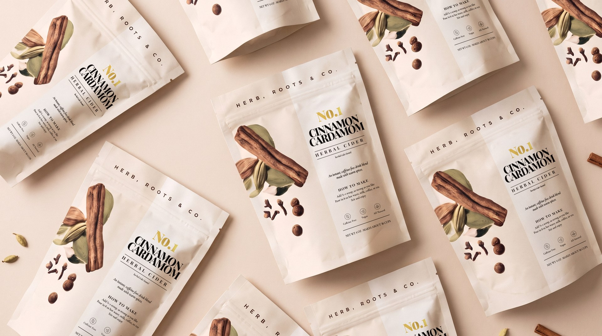

Herb, Roots & Co.
Turning a small-batch cinnamon cardamom pouch dieline into an always-on studio & motion ad engine.

[ 01 · Hero Flatlay ]The Challenge
Small-batch drops move faster than traditional production. Herb, Roots & Co. produces numbered herbal cider blends with matte craft pouches, fine serif typography, and illustrated botanicals. Early self-serve AI mockups distorted the front typography, invented claims, and lost the warm tactile grain of the pouch stock.
With seasonal drop windows lasting only weeks, waiting four weeks for a physical tabletop shoot per SKU wasn't viable. They needed studio-accurate pack shots, ingredient rituals, and short-form motion ads directly from their print dieline.

[ Input · Print Dieline ]
[ Twin · Front & Back ]01. Packaging & Twin Calibration
Starting from the original Illustrator pouch dieline, we mapped every typographic zone—the subtle vertical split-tone cream background, gold foil “No.1” badge, botanical spice illustration, and back-of-pack QR drop block—onto a physically accurate stand-up gusset geometry.
Exact Print Fidelity
Every crease along the tear notch, zip-lock seam, and bottom gusset reacts naturally to directional studio light without warping the serif lettering or nutritional icons.
- 1:1 lockup preservation for the “No.1 Cinnamon Cardamom” title and usage badges.
- Material shader tuned for uncoated warm craft laminate with soft specular roll-off.
- Front and back UV-mapped Twin enabling effortless angle switches across scenes.
02. Ritual & Lifestyle Scenes
To convert cold social traffic, static ads needed to sell both the packaging shelf appeal and the sensory warmth of the drink itself—golden steam, dissolving spice powder, and morning sunlight.
Art-Directed Creative Angles
- The Scoop Pour: Crisp overhead studio lighting capturing cinnamon-cardamom blend cascading into clear glassware beside the standing pouch.
- Daylight Hand-Held: Authentic POV lifestyle frame pairing natural linen textures and warm window shadows for organic TikTok/Reels native placements.
- Overhead Flatlay: Editorial spice halo framing the pouch for hero PDP banners and paid social carousels.

[ 02 · Studio Ritual ]
[ 03 · Lifestyle POV ]03. Campaign Rollout
Every asset underwent senior packaging designer sign-off for barcode legibility, spice illustration alignment, and warm color grading before delivery in Meta, TikTok, and e-commerce formats.
Static & motion creatives from one dieline
Dieline intake to finished campaign
Zero hallucinated ingredients or claims
No studio rental or shipping delays

[ 04 · Campaign Key Visual ]“We went from a flat pouch dieline to an entire launch suite—flatlays, pouring shots, and a 10-second commercial—without shipping a single sample box.”